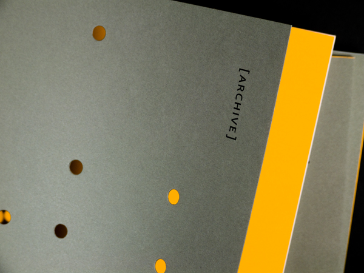

In the front of my thesis book, there is a signature page with the following words:
"Presented in Partial Fulfillment of the Requirements for the Degree of Master of Fine Arts in Graphic Design in the Department of Graphic Design of the Rhode Island School of Design."
In other words, this thesis book alone is not enough for a degree at this school. It turns out that the three forms I've been exploring in terms of convergence — web sites, designed objects, and physical experience — are the same elements that must come together to form a complete masters thesis at RISD.
Using my body of work as the archive, In Partial Fulfillment considers this book, my website, and my thesis defense as three distinct and dependent ways of navigating through my thesis. In order to see the whole, you need to experience its parts.
My goal was to have these three components relate to each other without being completely redundant, to show different lenses onto the same body of work, and to tangibly demonstrate the multiplicity of the work I produced in my three years here.
the web siteI could have made an entire thesis about the relationship between books and web sites. It is just one small portion of design's relationship to technology, and in planning my own website I wanted to build in complementary indexes to my body of work. The web site, the most intangible of the final thesis forms, contains indexes to the most concrete: a rigid taxonomy consisting of the semester in which the work was produced, and the media it utilized.
the presentation
The thesis defense lies somewhere in between books and websites: presenting the thesis as one linear narrative, but using the organizational structure of the books (described on the following page) as a guide.
The presentation included a series of posters designed specifically for the defense, combining the punched hole mapping from the books with quotes that highlight my interest in each subject.
the book
If the most intangible thesis document is organized by concrete details, then the most concrete of the thesis forms is organized by the most abstract. My thesis book -- or books -- are organized around the key terms I use when analyzing my work. Each term is contained in its own book readers can investigate the multiplicity of relationships between these six ideas in their own way.

